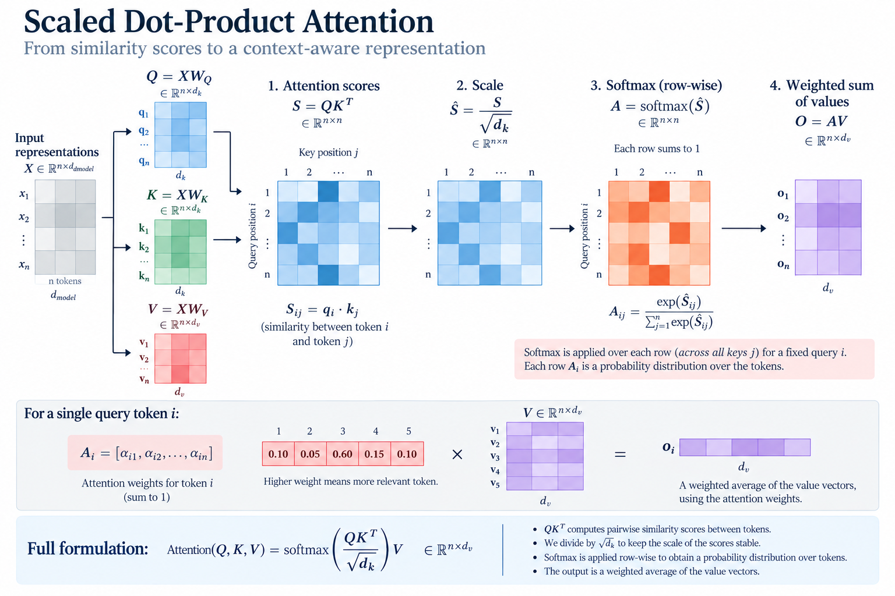
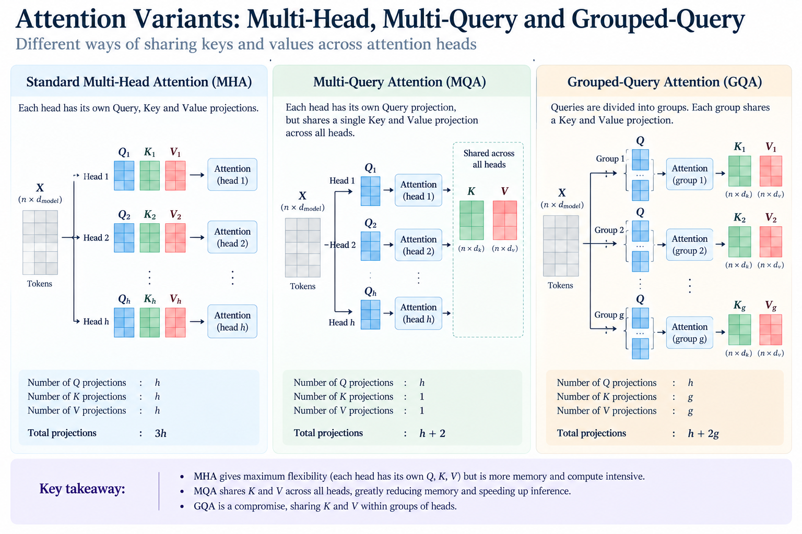

What is attention
really looking for?
From Q, K, V to making attention a little Flash-y.
Why do we need attention?
A neural network does not only need to identify individual tokens. It also needs to build representations that capture how those tokens relate to one another.
Consider:
Paris — France
The representation of Delhi can become more informative when it incorporates information about India. Similarly, the representation of Paris can benefit from information about France.
The same idea appears naturally in language:
The word bank by itself is ambiguous. The surrounding context helps determine which meaning is relevant.
So we would like a representation of each token that is not completely isolated, but is enriched by relevant information from other tokens.
How can we build such a context-aware representation?
What if every token could look at every other token?
Imagine that every token is allowed to examine the representations of all the other tokens.
For a sequence of \(n\) tokens, we could compute a relationship between every pair of tokens.
Each entry tells us something about how much one token should interact with another.
But there is an important question:
Which other tokens contain information that is actually useful for building my representation?
Every token attending to every other token
What is the token looking for?
Suppose one token is trying to build a richer representation. It can look at the representations of other tokens, but first it needs some way to express what information would be useful.
This is the role of the query.
A query represents the information need of the current position. It is what that position uses to search the other positions.
For example, the representation of Delhi may benefit from information about the country associated with it. Its query therefore provides a way to look for that kind of information.
But what does each other token offer for the query to search?
What does each token contain?
Every position needs a way to describe the kind of information it contains so that other queries can determine whether it is relevant.
This is the role of the key.
A key describes the characteristics of the information available at that position. Queries can then be compared against keys to determine how relevant one position is to another.
In our example, the query associated with Delhi can be compared with the keys of other tokens. A strong match with the key associated with India indicates that India contains information relevant to Delhi's current information need.
So we now have two distinct roles:
Once we know which positions are relevant, what information should we actually retrieve from them?
What information should we retrieve?
Knowing that another token is relevant is only half the problem. We also need the information that should actually be gathered from that token.
That is the role of the value.
The value carries the information that can actually be retrieved and incorporated into the new representation.
This gives attention a clean separation of responsibilities:
Query and Key determine where to look.
Value determines what information is gathered.
For Delhi, the query can determine that the information associated with India is highly relevant. The corresponding value is then what Delhi actually retrieves and incorporates into its new representation.
The new representation is therefore not simply the original representation. It is a representation enriched with information gathered from relevant positions.
We know what the Query, Key, and Value do. But how do we measure whether a Query and a Key are relevant to each other?
Why \(QK^T\)?
A natural way to compare two vectors is through their dot product.
If the query and key point in similar directions, the dot product is large. If they are poorly aligned, it is smaller.
Now do this for every query against every key.
This gives us a matrix of pairwise compatibility scores.
So \(QK^T\) tells us who is relevant to whom. But what information should we actually retrieve?
How do relevance scores become a new representation?
We now have \(QK^T\), a matrix of pairwise compatibility scores.
But these scores are not yet attention weights. We need to transform them into a stable distribution over the positions that each query can attend to.
Each entry is \[ S_{ij}=q_i^T k_j. \] A larger value means that query \(i\) and key \(j\) are more compatible.
But why do we divide by \(\sqrt{d_k}\) before applying softmax?
Why does \(d_k\) matter?
Look at one query-key dot product:
Assume, for intuition, that the components of \(q\) and \(k\) are i.i.d., independent of one another, have zero mean, and each has variance \(1\).
First consider one product: \[ x_\ell=q_\ell k_\ell. \] Because \(q_\ell\) and \(k_\ell\) are independent and zero-mean,
Its variance is
So each individual product contributes roughly one unit of variance. The important part comes when we add \(d_k\) of them.
Therefore the standard deviation of the dot product grows as
And this is where the \(\sqrt{d_k}\) comes from.
The dot product is a sum of \(d_k\) independent products. The variance of that sum grows with \(d_k\), so its standard deviation grows with \(\sqrt{d_k}\).
Why not divide by \(d_k\)?
Because \(d_k\) describes how the variance grows, not how the standard deviation grows. We want to normalize the scale of the scores, so we divide by their standard deviation.
Under the assumptions above,
If we divided by \(d_k\) instead, the variance would become
which would make the scores increasingly small as the key dimension grows.
So the scaled attention scores are
Now softmax turns scores into weights
Once the scores are kept at a sensible scale, softmax converts each row into a probability distribution over the keys:
For every query \(i\),
These weights are not necessarily normally distributed. Softmax simply produces a probability distribution: it tells us how the query distributes its attention across the available positions.
And finally, retrieve the information
The weights tell us how much information to take from each position. The values tell us what information to take.
In other words, each output is a weighted average of the value vectors:
So the complete mechanism is:
Score → scale → normalize → retrieve → aggregate.

Why multiple heads?
A sentence can contain many kinds of relationships.
One relationship might connect a pronoun to its antecedent. Another might capture a syntactic relationship. Another might capture a semantic association.
Instead of forcing one attention mechanism to capture all of these relationships, the Transformer uses multiple attention heads.
The outputs of the heads are then concatenated and projected.
But once multi-head attention worked, a new set of questions appeared.
Do all heads really need their own keys and values? Can we reduce the memory required during inference? Do every pair of tokens really need to interact?
KV Caching — Saving Attention from Amnesia
In standard multi-head attention, each head has its own query, key and value projections.
During autoregressive generation, every new token needs to attend to tokens that came before it. Without caching, the model would have to recompute the keys and values of those previous tokens again and again.
The KV cache gives attention a memory of the past.
Instead of forgetting and reconstructing the history at every step, the model stores the keys and values it has already computed and reuses them for future tokens.
But there is a catch: the longer the context, the more memory that attention has to carry.
So the next question is not simply:
Can attention remember the past?
It is:
How can attention remember more of the past without running out of memory?
What if we kept multiple query heads, but shared the keys and values?
Multi-Query Attention
Multi-Query Attention (MQA) uses multiple query heads but shares a single set of keys and values across those heads.
This reduces the KV-cache size, making autoregressive inference more memory efficient.
Grouped-Query Attention
MQA is an extreme form of sharing. Grouped-Query Attention (GQA) sits between MHA and MQA: several query heads share one key-value head.
This provides a trade-off between the richer per-head key/value representations of MHA and the smaller KV cache of MQA.

Can we compress the key-value information even further without simply sharing the same representation everywhere?
Multi-head Latent Attention
Multi-head Latent Attention (MLA) takes a different approach: instead of sharing full-dimensional K/V states, it asks whether those states need to be cached at all.
MLA caches a lower-dimensional KV latent, while using a separate query-latent pathway and a decoupled RoPE-aware component.
1. Compress the key-value information
MLA first maps the hidden states \(X\) to a compact KV latent:
Here \(d_c\) is much smaller than the full KV dimension. This latent is the main source of the KV-cache reduction.
The latent can be mapped to the content key and value:
At inference, we cache \(C^{KV}\) rather than full K/V states, along with the small RoPE-aware key component discussed below.
2. Q is also given a latent pathway
MLA also introduces a learned query latent:
The latent is then mapped into the content-query space:
The query latent is computed for the current step; the KV latent is the representation that must persist across decoding steps.
3. Why not simply reconstruct K?
We could reconstruct \(K^C\), but that would waste the benefit of caching a compact latent. Instead, MLA uses matrix associativity:
The projections can be rearranged so the current query is compared directly with cached \(C^{KV}\), without materializing every full key.
The key trick is: cache the latent, then rearrange the projections instead of reconstructing full keys.
4. But what about RoPE?
MLA also uses a decoupled RoPE-aware pathway. These vectors are learned from \(X\); RoPE then makes them position-aware.
Thus \(K^R\) is not pure position: it is a learned key representation with RoPE applied. Its small cached component is stored alongside \(C^{KV}\).
The attention score therefore has two parts:
This separation preserves the factorization used by the content score while still providing position-aware interactions.
5. What is actually saved?
MHA caches full K/V states for every token and head. MLA instead caches a compact content latent plus the small RoPE-aware key.
Notice what MLA does not do: it does not make the \(T\times T\) attention matrix sparse, and it does not remove the need for every query to interact with the relevant previous tokens. The saving comes from the representation stored for those previous tokens.
MLA asks a deeper question: Do we need to cache full-dimensional K and V at all?
MLA is therefore more than “GQA with fewer dimensions”: it changes what is stored in the KV cache.
MY RESEARCH Subset-First Attention
Around 2023-2024, I asked a different question. How to reduce attention parameters ?
If a down-projection can preserve the information needed by attention, does the representation necessarily have to be transformed before we decide which dimensions are useful?
My idea was to reverse the order: subset first, then transform.
Instead of applying the Q and K transformations to the complete D-dimensional representation, I first select a subset of the dimensions and perform the transformations only on that subset. V, however, remains in the original D-dimensional space.
The important asymmetry is deliberate: the reduced representation is used to determine where attention should go, while the full-dimensional V retains the information that is actually aggregated. I explored SFA in the context of automatic speech recognition (ASR).
Read my paper →1.What do I actually save?
Suppose the model dimension is D and I keep a fraction \(\alpha\) of the input dimensions for Q and K.
In standard attention, the Q and K projection matrices are:
Together, they contain:
parameters.
After subsetting, the input to each Q/K transformation has only \(\alpha D\) dimensions:
Therefore the Q/K parameters become:
The parameter reduction in Q and K is therefore:
So if I keep only 50% of the dimensions:
2.What happens to the whole attention block?
V is intentionally left untouched:
Standard QKV projections therefore contain:
With subset-then-transform Q and K, they contain:
The fractional reduction in QKV projection parameters is therefore:
At 50% subsetting:
3.Does the saving show up at inference too?
Yes, but the exact saving depends on which computation we count. For the Q/K transformations themselves, reducing their input dimensionality from D to \(\alpha D\) reduces their dominant matrix-multiplication cost by the same factor.
becomes approximately:
At \(\alpha=0.5\), that part of the computation is therefore reduced by 50%.
There is also a saving in the QK attention-score computation if the resulting Q and K representations are themselves reduced. If, instead, the subset is only used as the input to a full-D transformation, that particular saving does not automatically follow.
Attention Types — Based on What Attends to What
The attention equation does not require the queries, keys and values to come from the same sequence.
That gives us several important configurations.
Self-Attention
Queries, keys and values all come from the same sequence. Each token can therefore build a representation using information from other tokens in that sequence.
Cross-Attention
Queries come from one sequence while keys and values come from another.
This is useful when one representation needs to retrieve information from another — for example, in encoder-decoder architectures.
Causal Attention
For autoregressive generation, a token must not see future tokens.
We therefore apply a causal mask so that position \(i\) can only attend to positions at or before \(i\).
Do we really need every token to attend to every other token?
Standard self-attention creates an interaction between every pair of tokens.
As the sequence becomes longer, this quadratic scaling becomes increasingly expensive.
What if we only allowed selected tokens to interact?
Local and Sparse Attention
Sparse attention restricts which query-key interactions are computed. A token might attend only to nearby tokens, selected positions, blocks, or other structured subsets.
For example, with a local window of size \(w\), each query interacts with only \(w\) keys instead of all \(T\) keys. The number of attention scores therefore falls from \(T^2\) to roughly \(Tw\).
But there is an important implementation detail: masking alone does not reduce computation. If the model first computes the full \(QK^T\) matrix and then masks unwanted entries, the quadratic computation has already been performed.
To obtain an actual computational benefit, the implementation must exploit the sparsity directly—for example, through local or block-sparse kernels that compute only the permitted query-key interactions.
Thus, sparse attention reduces computation in principle, but realizing that reduction efficiently depends on hardware-aware sparse kernels. Irregular sparsity can also introduce overhead, so the theoretical reduction does not necessarily translate into the same proportional wall-clock speedup.
Linear Attention
Another direction is to avoid the quadratic query-key interaction altogether. The key idea is to reformulate attention so that the sequence dimension \(T\) does not appear in an intermediate \(T\times T\) attention matrix.
Consider attention without the softmax for a moment:
Here, \(Q,K\in\mathbb{R}^{T\times d}\) and \(V\in\mathbb{R}^{T\times d_v}\). The first multiplication produces \(QK^T\in\mathbb{R}^{T\times T}\). This is where the quadratic dependence on sequence length comes from.
But matrix multiplication is associative. So do we really need to construct \(QK^T\) first?
We can instead change the order of multiplication:
Now \(K^TV\) has shape \(\mathbb{R}^{d\times d_v}\), independent of sequence length. We first aggregate information from all keys and values into this smaller representation, and only then multiply by \(Q\).
The second multiplication is then
The important point is that we never form the \(T\times T\) matrix. The computation scales approximately as
rather than the \(O(T^2d)\) interaction cost associated with explicitly forming \(QK^T\).
Then have we obtained ordinary softmax attention for free?
No. There is a crucial complication. Standard attention contains the softmax:
In general, the softmax cannot simply be moved through the matrix multiplication in the same way. Therefore, the simple rearrangement above does not reproduce standard softmax attention.
Linear attention methods instead modify the similarity computation, often by expressing it through a feature map \(\phi(\cdot)\):
This allows the attention output to be written in the form
The key quantity
can be accumulated without constructing all pairwise query-key scores. Each query then interacts with this accumulated summary rather than with every key individually.
This is where the name linear attention comes from: for a fixed feature dimension, the dependence on sequence length can become linear rather than quadratic.
The trade-off is that these methods generally do not compute exactly the same softmax attention distribution as standard attention. They exchange the exact \(T\times T\) interaction for a more computationally efficient formulation.
Every part of the equation answers a different question.
What is attention really learning?
At first glance, attention looks like a compact mathematical operation.
But underneath the equation is a simple idea:
Decide what matters, and retrieve the information that matters.
Queries describe what is being sought. Keys determine compatibility. Values carry the information that gets aggregated.
The mathematics turns this intuition into a differentiable mechanism that can learn which relationships matter from data.
But if attention can relate every token to every other token, what tells it where those tokens actually are?